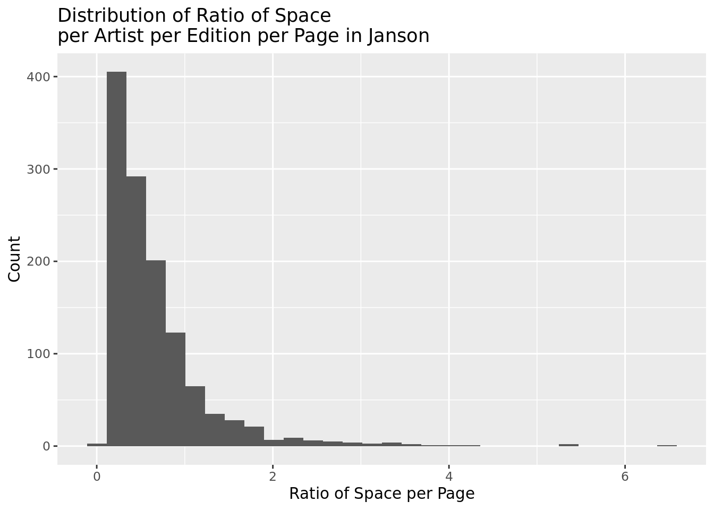
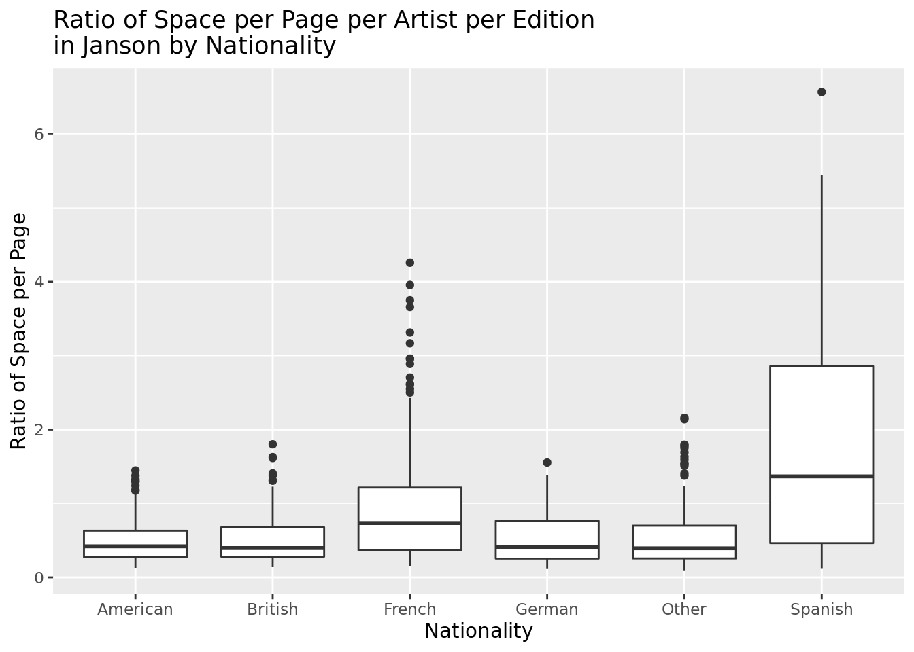
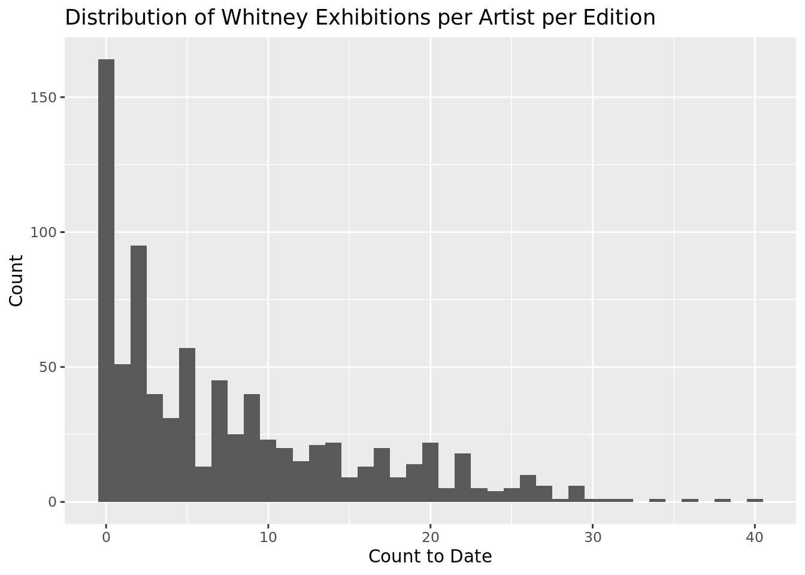
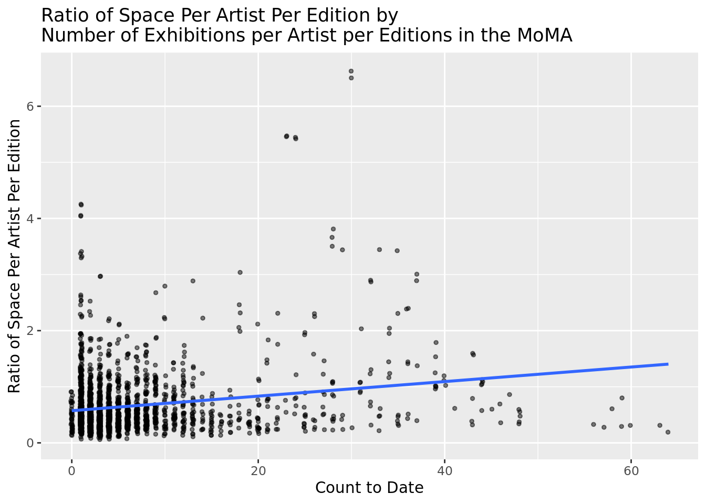

library(tidyverse)Warning in system("timedatectl", intern = TRUE): running command 'timedatectl'
had status 1library(tidymodels)
library(knitr)
library(janitor) # for the clean_names function
library(reshape)
library(ggplot2)
library(dplyr)2022-02-21
library(tidyverse)Warning in system("timedatectl", intern = TRUE): running command 'timedatectl'
had status 1library(tidymodels)
library(knitr)
library(janitor) # for the clean_names function
library(reshape)
library(ggplot2)
library(dplyr)# load gardner
gardner <- read_csv(here::here("Chapter1", "data/gardner.csv")) %>%
janitor::clean_names()
# load janson
janson <- read_csv(here::here("Chapter1", "data/janson.csv")) %>%
janitor::clean_names()
# load MoMA
moma <- read_csv(here::here("Chapter1", "data/moma.csv")) %>%
janitor::clean_names() %>%
filter(year != "MISSING YEAR") %>%
mutate(year = as.numeric(year))Warning: One or more parsing issues, see `problems()` for details# load CountMoMAExh
#countmoma <- read_csv(here::here("Chapter1", "data/countmoma.csv")) %>%
# janitor::clean_names()
# load Whitney
whitney <- read_csv(here::here("Chapter1", "data/whitney.csv")) %>%
janitor::clean_names()NOTE: Moma data has some (very few) rows where the year is MISSING YEAR, check if those can be filled in.
Join gardner and janson with column = book, janson, gardner
janson <- janson %>%
mutate(
artist_nationality_other =
case_when(
artist_nationality == "French" ~ "French",
artist_nationality == "British" ~ "British",
artist_nationality == "American" ~ "American",
artist_nationality == "Spanish" ~ "Spanish",
artist_nationality == "German" ~ "German",
TRUE ~ "Other"
)
) %>%
select(
"artist_name",
"edition_number",
"year",
"artist_unique_id",
"artist_nationality",
"artist_nationality_other",
"artist_gender",
"artist_race",
"artist_ethnicity",
"book",
"space_ratio_per_page"
)gardner <- gardner %>%
mutate(
artist_nationality_other =
case_when(
artist_nationality == "French" ~ "French",
artist_nationality == "British" ~ "British",
artist_nationality == "American" ~ "American",
artist_nationality == "Spanish" ~ "Spanish",
artist_nationality == "German" ~ "German",
TRUE ~ "Other"
)
) %>%
select(
"artist_name",
"edition_number",
"year",
"artist_unique_id",
"artist_nationality",
"artist_nationality_other",
"artist_gender",
"artist_race",
"artist_ethnicity",
"book",
"space_ratio_per_page"
)NOTE: I don’t think we want these joined, we want them to be binded to each other. So I changed that.
gardnerjanson <- gardner %>%
bind_rows(janson)
sumgj <- gardnerjanson %>%
group_by(artist_name, year)%>%
summarize(space_ratio_per_page_total = sum(space_ratio_per_page))`summarise()` has grouped output by 'artist_name'. You can override using the
`.groups` argument.gardnerjanson <- gardnerjanson%>%
left_join(sumgj)%>%
select(-space_ratio_per_page)%>%
unique()Joining, by = c("artist_name", "year")Create moma with complete years
moma_complete_years <- moma %>%
count(artist_name, year)%>%
mutate(count = 1)%>%
arrange(artist_name, year)%>%
group_by(artist_name)%>%
ungroup() %>%
complete(artist_name, year = c(min(year):max(year))) %>%
mutate(
moma_count = if_else(is.na(count), 0, count)
) %>%
arrange(artist_name, year)%>%
group_by(artist_name)%>%
mutate(moma_count_to_date = cumsum(moma_count))%>%
ungroup()%>%
select(artist_name, year, moma_count, moma_count_to_date)Create whitney with complete years
whitney_complete_years <- moma %>%
count(artist_name, year)%>%
mutate(count = 1)%>%
arrange(artist_name, year)%>%
group_by(artist_name)%>%
ungroup() %>%
complete(artist_name, year = c(min(year):max(year))) %>%
mutate(
whitney_count = if_else(is.na(count), 0, count)
) %>%
arrange(artist_name, year)%>%
group_by(artist_name)%>%
mutate(whitney_count_to_date = cumsum(whitney_count))%>%
ungroup()%>%
select(artist_name, year, whitney_count, whitney_count_to_date)Join moma and whitney info to gardnerjanson
NOTE: I would expect gardnerjanson_museums to have the same number of rows as gardnerjanson, we should look into why that’s not happening.
This is occurring as there are some examples of an artists count of exhibitions per year
gardnerjanson_museums <- gardnerjanson %>%
left_join(moma_complete_years, by = c("artist_name", "year")) %>%
left_join(whitney_complete_years, by = c("artist_name", "year"))Make clean Artist ID - alphabetical for all artists across books
#The artist_unique_id is alphabetrical per book - I should standardize it so that it is alphabetical regardless of book gardnerjanson_museums <- gardnerjanson_museums %>%
mutate(moma_cat = case_when(moma_count_to_date >= 1 ~ '1',
TRUE ~ '0'))gardnerjanson_museums <- gardnerjanson_museums %>%
mutate(whitney_cat = case_when(whitney_count_to_date >= 1 ~ '1',
TRUE ~ '0'))Janson:
ggplot(gardnerjanson_museums %>% filter(book == "janson"),
aes(x = space_ratio_per_page_total, fill = edition_number)) +
geom_histogram() +
labs(
title = "Distribution of Ratio of Space\nper Artist per Edition per Page in Janson",
x = "Ratio of Space per Page",
y = "Count"
)`stat_bin()` using `bins = 30`. Pick better value with `binwidth`.
summary(janson$space_ratio_per_page) Min. 1st Qu. Median Mean 3rd Qu. Max.
0.0946 0.2531 0.3387 0.3967 0.4855 1.2785 median <- median(janson$space_ratio_per_page)The visualization above is right skewed, unimodal and assymetrical. Therefore, we would want to look at the median and IQR. The median of space_ratio_per_page_total in Janson is 0.3387305.
space_ratio_per_page with Gender
ggplot(gardnerjanson_museums %>% filter(book == "janson"),
aes(x = artist_gender, y = space_ratio_per_page_total)) +
geom_boxplot() +
labs(
title = "Ratio of Space per Page per Artist per Edition\nin Janson by Gender",
x = "Gender",
y = "Ratio of Space per Page"
)
space_ratio_per_page with Race
ggplot(gardnerjanson_museums %>% filter(book == "janson"),
aes(x = artist_race, y = space_ratio_per_page_total)) +
geom_boxplot() +
labs(
title = "Ratio of Space per Page per Artist per Edition\nin Janson by Race",
x = "Race",
y = "Ratio of Space per Page"
)
space_ratio_per_page with Ethnicity
ggplot(gardnerjanson_museums %>% filter(book == "janson"),
aes(x = artist_ethnicity, y = space_ratio_per_page_total)) +
geom_boxplot() +
labs(
title = "Ratio of Space per Page per Artist per Edition\nin Janson by Ethnicity",
x = "Ethnicity",
y = "Ratio of Space per Page"
)
space_ratio_per_page with Nationality
ggplot(gardnerjanson_museums %>% filter(book == "janson"),
aes(x = artist_nationality_other, y = space_ratio_per_page_total)) +
geom_boxplot() +
labs(
title = "Ratio of Space per Page per Artist per Edition\nin Janson by Nationality",
x = "Nationality",
y = "Ratio of Space per Page"
)
MLR of Janson with Gender +Race + Nationality + Ethnicity ~ space_ratio_per_page
jansonMLR <- lm(space_ratio_per_page_total ~ artist_race +
artist_ethnicity +
artist_gender +
artist_nationality_other +
moma_count_to_date +
whitney_count_to_date,
data = gardnerjanson_museums %>% filter(book == "janson")
)
summary(jansonMLR)
Call:
lm(formula = space_ratio_per_page_total ~ artist_race + artist_ethnicity +
artist_gender + artist_nationality_other + moma_count_to_date +
whitney_count_to_date, data = gardnerjanson_museums %>% filter(book ==
"janson"))
Residuals:
Min 1Q Median 3Q Max
-1.5820 -0.2791 -0.0845 0.1987 4.6176
Coefficients: (1 not defined because of singularities)
Estimate Std. Error t value Pr(>|t|)
(Intercept) 0.296122 0.252441 1.173 0.241
artist_raceWhite 0.049206 0.177078 0.278 0.781
artist_ethnicityNot Hispanic or Latinx 0.027680 0.170245 0.163 0.871
artist_genderMale 0.093875 0.067267 1.396 0.163
artist_nationality_otherBritish 0.115839 0.071741 1.615 0.107
artist_nationality_otherFrench 0.383199 0.054726 7.002 5.17e-12
artist_nationality_otherGerman 0.008589 0.071765 0.120 0.905
artist_nationality_otherOther -0.016181 0.055845 -0.290 0.772
artist_nationality_otherSpanish 1.207312 0.197489 6.113 1.49e-09
moma_count_to_date 0.010181 0.002217 4.591 5.08e-06
whitney_count_to_date NA NA NA NA
(Intercept)
artist_raceWhite
artist_ethnicityNot Hispanic or Latinx
artist_genderMale
artist_nationality_otherBritish
artist_nationality_otherFrench ***
artist_nationality_otherGerman
artist_nationality_otherOther
artist_nationality_otherSpanish ***
moma_count_to_date ***
whitney_count_to_date
---
Signif. codes: 0 '***' 0.001 '**' 0.01 '*' 0.05 '.' 0.1 ' ' 1
Residual standard error: 0.5473 on 838 degrees of freedom
(371 observations deleted due to missingness)
Multiple R-squared: 0.2348, Adjusted R-squared: 0.2266
F-statistic: 28.58 on 9 and 838 DF, p-value: < 2.2e-16glance(jansonMLR)$r.squared[1] 0.2348386glance(jansonMLR)$adj.r.squared[1] 0.2266209Gardner:
ggplot(
gardnerjanson_museums %>% filter(book == "gardner"),
aes(x = space_ratio_per_page_total)
) +
geom_histogram() +
labs(
title = "Distribution of Ratio of Space\nper Artist per Edition per Page in Gardner",
x = "Ratio of Space per Page",
y = "Count"
)`stat_bin()` using `bins = 30`. Pick better value with `binwidth`.
gardnerjanson_museums %>%
filter(book == "gardner") %>%
summarize(
min = min(space_ratio_per_page_total),
q1 = quantile(space_ratio_per_page_total, 0.25),
median = median(space_ratio_per_page_total),
mean = mean(space_ratio_per_page_total),
q3 = quantile(space_ratio_per_page_total, 0.75),
max = max(space_ratio_per_page_total)
)# A tibble: 1 × 6
min q1 median mean q3 max
<dbl> <dbl> <dbl> <dbl> <dbl> <dbl>
1 0.142 0.348 0.456 0.607 0.663 6.57space_ratio_per_page vs Gender
ggplot(gardnerjanson_museums %>% filter(book == "gardner"),
aes(x = artist_gender, y = space_ratio_per_page_total)
) +
geom_boxplot() +
labs(
title = "Ratio of Space per Page per Artist per Edition\nin Gardner by Gender",
x = "Gender",
y = "Ratio of Space per Page"
)
space_ratio_per_page vs Race
ggplot(
gardnerjanson_museums %>% filter(book == "gardner"),
aes(x = artist_race, y = space_ratio_per_page_total)
) +
geom_boxplot() +
labs(
title = "Ratio of Space per Page per Artist per Edition\nin Gardner by Race",
x = "Race",
y = "Ratio of Space per Page"
) +
theme(axis.text.x = element_text(angle = 45, size = 5)) +
ylim(0, 2.0)Warning: Removed 51 rows containing non-finite values (stat_boxplot).
space_ratio_per_page vs Ethnicity
ggplot(
gardnerjanson_museums %>% filter(book == "gardner"),
aes(x = artist_ethnicity, y = space_ratio_per_page_total)
) +
geom_boxplot() +
labs(
title = "Ratio of Space per Page per Artist per Edition\nin Gardner by Ethnicity",
x = "Ethnicity",
y = "Ratio of Space per Page"
)
space_ratio_per_page vs Nationality
ggplot(
gardnerjanson_museums %>% filter(book == "gardner"),
aes(x = artist_nationality_other, y = space_ratio_per_page_total)
) +
geom_boxplot() +
labs(
title = "Ratio of Space per Page per Artist per Edition\nin Gardner by Nationality",
x = "Nationality",
y = "Ratio of Space per Page"
)
GardnerMLR Demographic
gardnerMLR <- lm(space_ratio_per_page_total ~ artist_race +
artist_ethnicity +
artist_gender +
artist_nationality_other +
moma_count_to_date +
whitney_count_to_date,
data = gardnerjanson_museums %>% filter(book == "gardner")
)
summary(gardnerMLR)
Call:
lm(formula = space_ratio_per_page_total ~ artist_race + artist_ethnicity +
artist_gender + artist_nationality_other + moma_count_to_date +
whitney_count_to_date, data = gardnerjanson_museums %>% filter(book ==
"gardner"))
Residuals:
Min 1Q Median 3Q Max
-1.2441 -0.2127 -0.0719 0.1101 4.9496
Coefficients: (1 not defined because of singularities)
Estimate Std. Error t value Pr(>|t|)
(Intercept) 0.233686 0.362665 0.644 0.519
artist_raceBlack or African American 0.147962 0.372344 0.397 0.691
artist_raceN/A 0.028900 0.447846 0.065 0.949
artist_raceWhite 0.131205 0.350237 0.375 0.708
artist_ethnicityNot Hispanic or Latinx 0.015571 0.089031 0.175 0.861
artist_genderMale 0.074999 0.050433 1.487 0.137
artist_nationality_otherBritish 0.086696 0.058975 1.470 0.142
artist_nationality_otherFrench 0.377380 0.041121 9.177 < 2e-16
artist_nationality_otherGerman -0.012336 0.053580 -0.230 0.818
artist_nationality_otherOther 0.044097 0.044525 0.990 0.322
artist_nationality_otherSpanish 0.967722 0.116221 8.327 2.36e-16
moma_count_to_date 0.007079 0.001679 4.217 2.68e-05
whitney_count_to_date NA NA NA NA
(Intercept)
artist_raceBlack or African American
artist_raceN/A
artist_raceWhite
artist_ethnicityNot Hispanic or Latinx
artist_genderMale
artist_nationality_otherBritish
artist_nationality_otherFrench ***
artist_nationality_otherGerman
artist_nationality_otherOther
artist_nationality_otherSpanish ***
moma_count_to_date ***
whitney_count_to_date
---
Signif. codes: 0 '***' 0.001 '**' 0.01 '*' 0.05 '.' 0.1 ' ' 1
Residual standard error: 0.4882 on 1142 degrees of freedom
(789 observations deleted due to missingness)
Multiple R-squared: 0.2287, Adjusted R-squared: 0.2213
F-statistic: 30.79 on 11 and 1142 DF, p-value: < 2.2e-16glance(gardnerMLR)$r.squared[1] 0.2287137glance(gardnerMLR)$adj.r.squared[1] 0.2212845MLR demograpic with jansongardner
gardnerjansonMLR <- lm(space_ratio_per_page_total ~ artist_race +
artist_ethnicity +
artist_gender +
artist_nationality_other +
moma_count_to_date +
whitney_count_to_date,
data = gardnerjanson_museums
)
summary(gardnerjansonMLR)
Call:
lm(formula = space_ratio_per_page_total ~ artist_race + artist_ethnicity +
artist_gender + artist_nationality_other + moma_count_to_date +
whitney_count_to_date, data = gardnerjanson_museums)
Residuals:
Min 1Q Median 3Q Max
-1.4254 -0.2425 -0.0775 0.1557 4.8198
Coefficients: (1 not defined because of singularities)
Estimate Std. Error t value Pr(>|t|)
(Intercept) 0.265408 0.375743 0.706 0.4800
artist_raceBlack or African American 0.099651 0.381321 0.261 0.7939
artist_raceN/A 0.004433 0.470532 0.009 0.9925
artist_raceWhite 0.106769 0.366553 0.291 0.7709
artist_ethnicityNot Hispanic or Latinx 0.007040 0.079913 0.088 0.9298
artist_genderMale 0.081745 0.040560 2.015 0.0440
artist_nationality_otherBritish 0.100183 0.045631 2.195 0.0282
artist_nationality_otherFrench 0.378524 0.033071 11.446 < 2e-16
artist_nationality_otherGerman -0.004633 0.043183 -0.107 0.9146
artist_nationality_otherOther 0.017715 0.034921 0.507 0.6120
artist_nationality_otherSpanish 1.045134 0.100291 10.421 < 2e-16
moma_count_to_date 0.008356 0.001346 6.207 6.57e-10
whitney_count_to_date NA NA NA NA
(Intercept)
artist_raceBlack or African American
artist_raceN/A
artist_raceWhite
artist_ethnicityNot Hispanic or Latinx
artist_genderMale *
artist_nationality_otherBritish *
artist_nationality_otherFrench ***
artist_nationality_otherGerman
artist_nationality_otherOther
artist_nationality_otherSpanish ***
moma_count_to_date ***
whitney_count_to_date
---
Signif. codes: 0 '***' 0.001 '**' 0.01 '*' 0.05 '.' 0.1 ' ' 1
Residual standard error: 0.514 on 1990 degrees of freedom
(1160 observations deleted due to missingness)
Multiple R-squared: 0.2281, Adjusted R-squared: 0.2238
F-statistic: 53.45 on 11 and 1990 DF, p-value: < 2.2e-16glance(gardnerjansonMLR)$r.squared[1] 0.228065NOTE: I think something is wrong with the museum join, take a look to see if you can debug, or we can look together. Very few records are being matched, which seems odd.
whitney eda
ggplot(gardnerjanson_museums, aes(x = whitney_count_to_date)) +
geom_histogram() +
labs(
title = "Distribution of Whitney Exhibitions per Artist per Edition",
x = "Count to Date",
y = "Count"
)`stat_bin()` using `bins = 30`. Pick better value with `binwidth`.Warning: Removed 1160 rows containing non-finite values (stat_bin).
ggplot(gardnerjanson_museums, aes(x = whitney_count_to_date, y = space_ratio_per_page_total)) +
geom_point(position=position_jitter(h=0.1, w=0.1), alpha = 0.5, size = 1) +
geom_smooth(method = "lm", se = FALSE)+
labs(
title = "Ratio of Space Per Artist Per Edition by\nNumber of Exhibitions per Artist per Editions in the Whitney",
x = "Count to Date",
y = "Ratio of Space Per Artist Per Edition"
)`geom_smooth()` using formula 'y ~ x'Warning: Removed 1160 rows containing non-finite values (stat_smooth).Warning: Removed 1160 rows containing missing values (geom_point).
#corr_coefp <- ggplot(gardnerjanson_museums, aes(space_ratio_per_page_total,year)) +
geom_tile(aes(fill = whitney_count_to_date), colour = "steelblue") +
scale_fill_gradient(low = "steelblue",high = "red")
pg <- ggplot(gardnerjanson_museums, aes(space_ratio_per_page_total,year)) +
geom_tile(aes(fill = moma_count_to_date), colour = "steelblue") +
scale_fill_gradient(low = "steelblue",high = "red")
gmoma eda
ggplot(gardnerjanson_museums, aes(x = moma_count_to_date)) +
geom_histogram() +
labs(
title = "Distribution of MoMA Exhibitions per Artist per Edition",
x = "Count to Date",
y = "Count"
)`stat_bin()` using `bins = 30`. Pick better value with `binwidth`.Warning: Removed 1160 rows containing non-finite values (stat_bin).
ggplot(gardnerjanson_museums, aes(x = moma_count_to_date, y = space_ratio_per_page_total)) +
geom_point(position=position_jitter(h=0.1, w=0.1), alpha = 0.5, size = 1) +
geom_smooth(method = "lm", se = FALSE)+
labs(
title = "Ratio of Space Per Artist Per Edition by\nNumber of Exhibitions per Artist per Editions in the MoMA",
x = "Count to Date",
y = "Ratio of Space Per Artist Per Edition"
)`geom_smooth()` using formula 'y ~ x'Warning: Removed 1160 rows containing non-finite values (stat_smooth).Warning: Removed 1160 rows containing missing values (geom_point).
#corr_coef